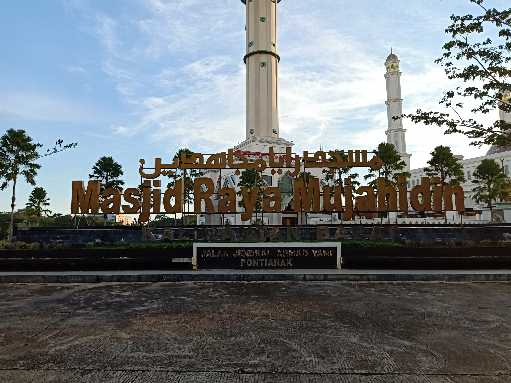

Masjid Raya Mujahidin

Taman Digulis Pontianak

Pontianak adalah Ibukota Provinsi Kalimantan Barat. Banyak orang yang belum mengetahui persis asal-usul kota ini.Banyak sumber yang menyebutkan asal muasal dengan latar belakang yang cukup berbeda. Salah satunya berhubungan dengan sosok hantu perempuan yang ada karena meninggal saat melahirkan, kuntilanak.
Awal mulanya dari pendirian Yayasan Mujahidin, yang berdiri pada tanggal 2 Oktober 1953. Kemudian diresmikan pertama kali pada tanggal 23 Oktober 1978.
Awalnya Monumen ini diresmikan oleh Gubernur Kalimantan Barat H. Soedjiman pada tahun 10 November 1987.Perlu kamu ketahui bahwa Tugu Taman Digulis

Letaknya yang berada di Komplek Perkampungan Budaya di Jalan Sutan Syahrir Kota Baru Pontianak menjadikan rumah radakng sebagai ikon baru kota Pontianak setelah Tugu Khatulistiwa.